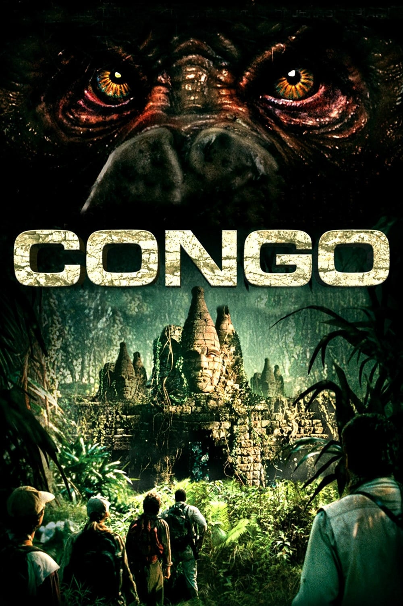

Мировая премьера: 9 июня 1995
Слоган: Здесь ты сам становишься видом на грани исчезновения.
Сюжет: Мультимиллионер Р.Б. Трэвис отправляет своего сына Чарльза в Конго на поиски редких голубых алмазов, способных значительно усилить возможности телекоммуникационных лазеров. Однако экспедиция подвергается нападению, и связь с участниками обрывается. Доктор Карен Росс, бывшая невеста Чарльза, получает от Трэвиса задание отправиться в Конго, завершить начатую миссию и, если повезёт, найти его сына живым. Вскоре Карен знакомится с доктором Питером Эллиотом и необычной гориллой по имени Эми, которая способна общаться с людьми благодаря специальной перчатке, переводящей язык жестов в речь. Эллиот намерен вернуть её на родину, в Конго, при поддержке румынского мецената, одержимого идеей найти легендарный затерянный город Зинж. Оказавшись в Африке, участники экспедиции сталкиваются с враждебными военными формированиями, местными племенами и загадочной расой серых горилл-убийц.
Режиссёр: Фрэнк Маршалл
В основе: Роман Майкла Крайтона "Конго" (США, 1980)
В ролях: Лора Линни, Дилан Уолш, Эрни Хадсон
| Лора Линни | Доктор Карен Росс |
| Дилан Уолш | Доктор Питер Эллиот |
| Эрни Хадсон | Монро Келли |
| Тим Карри | Херкемер Гомулка |
| Грант Хеслов | Ричард |
| Джо Дон Бейкер | Р.Б. Трэвис |
| Брюс Кэмпбелл | Чарльз Трэвис |
| Адевале | Кахега |
| Делрой Линдо | Капитан Ванта |
| Джо Пантолиано | Эдди Вентро |
Бюджет: $ 50 млн.
Кассовые сборы в США: $ 81 млн.
Кассовые сборы в мире: $ 152 млн.
Продолжительность: 1 ч. 40 мин.
Рейтинг: 5.3